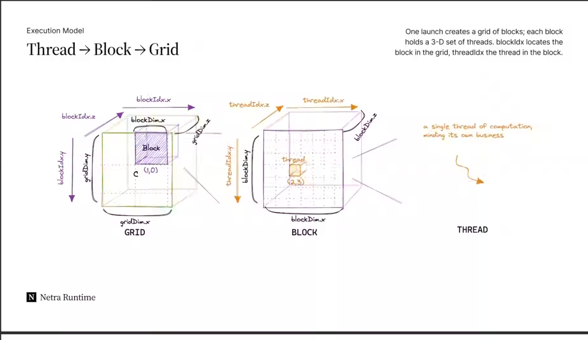

CUDA ↔ Triton cheat-sheet
Reference · the execution-model vocabulary, compressed · keep open while reading lessons
The one-line model

Glossary (adhere to this in every lesson)
| Term | Meaning |
|---|---|
| Grid | All the work for a single kernel launch; a (multi-dim) array of blocks/programs. |
| Block (CUDA) | A group of threads sharing fast on-chip memory; can synchronize. The unit Triton programs at. |
| Thread (CUDA) | The smallest execution unit; processes one scalar. Invisible in Triton source. |
| Program instance (Triton) | One run of your @triton.jit kernel. Occupies the role of a CUDA block, but its body operates on a whole tile. |
| Tile (Triton) | A small fixed-size array (dims are powers of two) that one program loads, computes, and stores as a unit. |
| SPMD | Single Program, Multiple Data. Both models are SPMD — Triton just blocks programs instead of threads. |
| Mask | Boolean tile that disables out-of-bounds lanes so the last (ragged) block is safe. |
Symbol map
| CUDA | Triton | Question it answers |
|---|---|---|
blockIdx.x | tl.program_id(axis=0) | Which block/program am I? |
blockIdx.{y,z} | tl.program_id(1), tl.program_id(2) | 2-D / 3-D launch grids. |
gridDim.x | launch grid tuple; tl.num_programs(0) | How many programs total? |
blockDim.x | BLOCK_SIZE: tl.constexpr | How many elements per program (you choose / autotune). |
threadIdx.x | — none — | (Compiler-owned. You never write it.) |
__shared__ / __syncthreads() | — none — | (Compiler allocates & synchronizes shared memory.) |
What the Triton compiler does for you
Things you'd hand-tune in CUDA that simply don't appear in Triton code:
- memory coalescing
- thread swizzling
- shared-memory allocation, synchronization & bank-conflict avoidance
- automatic vectorization & pre-fetching
- tensor-core-aware instruction selection
- asynchronous copy scheduling
The kernel skeleton (memorize the shape)
Listen first: memorize the kernel as six beats. One, who am I —
pid reads the program id. Two, my indices — offsets is
pid times BLOCK_SIZE plus a range up to BLOCK_SIZE, the tile this
program owns. Three, guard the edge — mask keeps offsets below
n_elements. Four, load the input tile under the mask. Five, compute over
the whole tile. Six, store the result tile under the mask. The launch below builds the
grid as n_elements divided by BLOCK_SIZE, rounded up with
triton.cdiv, then launches the kernel over it.
@triton.jit
def kernel(x_ptr, ..., n_elements, BLOCK_SIZE: tl.constexpr):
pid = tl.program_id(axis=0) # 1. who am I
offsets = pid * BLOCK_SIZE + tl.arange(0, BLOCK_SIZE) # 2. my tile of indices
mask = offsets < n_elements # 3. guard the edge
x = tl.load(x_ptr + offsets, mask=mask) # 4. load tile
# ... compute over the whole tile ... # 5. tensor math
tl.store(out_ptr + offsets, result, mask=mask) # 6. store tile
# launch
grid = lambda meta: (triton.cdiv(n_elements, meta['BLOCK_SIZE']),)
kernel[grid](x, ..., n_elements, BLOCK_SIZE=1024)Six beats: who am I → my indices → mask → load → compute → store.
💬 Ask your teacher to expand any row of these tables into its own lesson.
Reference · Zain's AI Inference Lab · sources: openai.com/index/triton, triton-lang.org